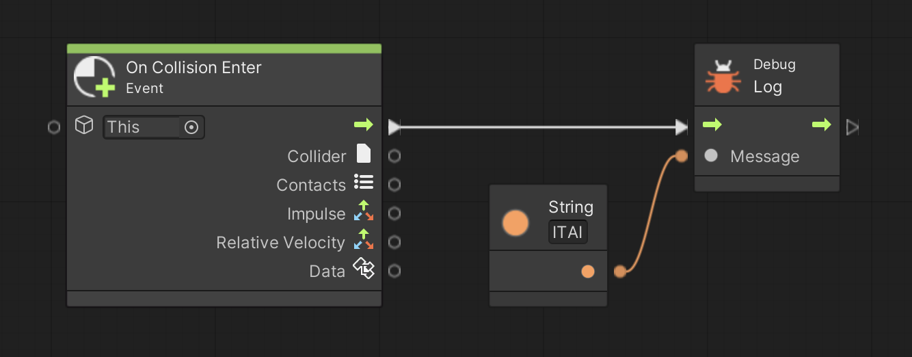
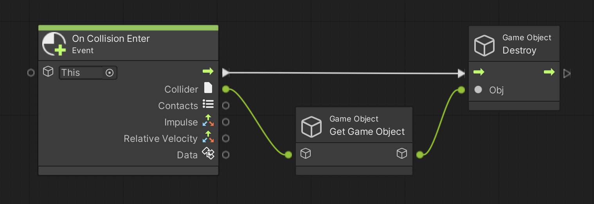
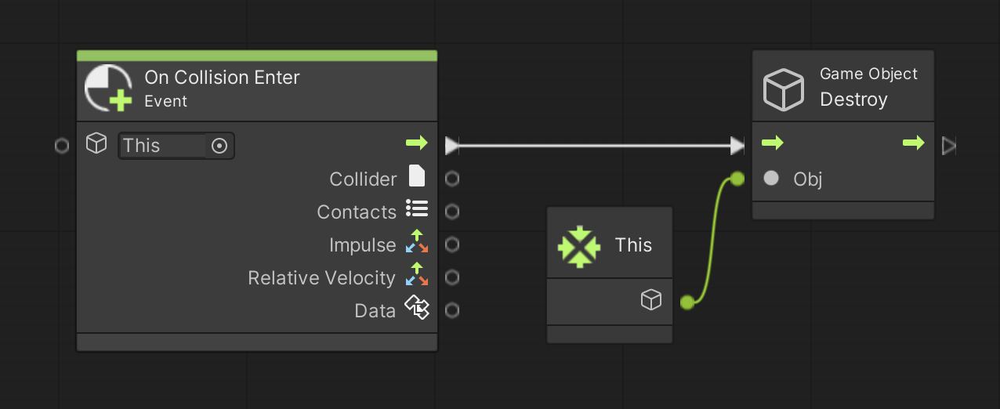
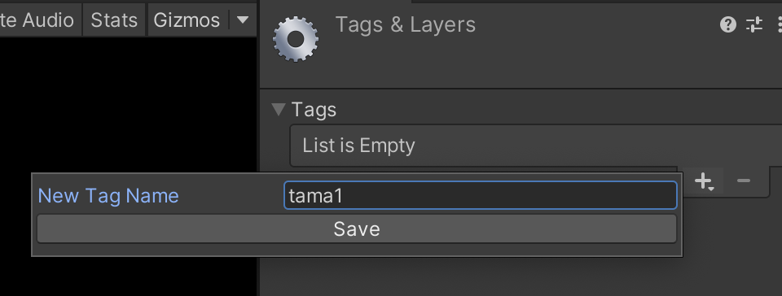
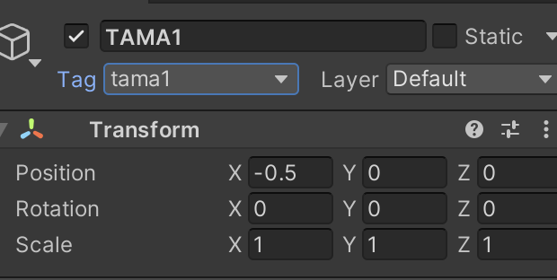
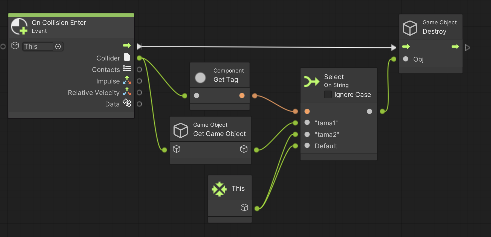
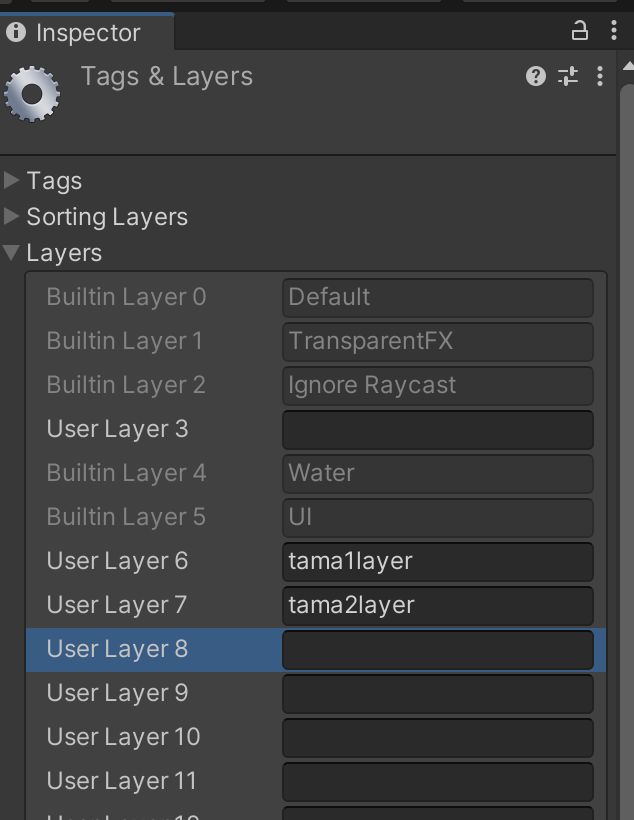
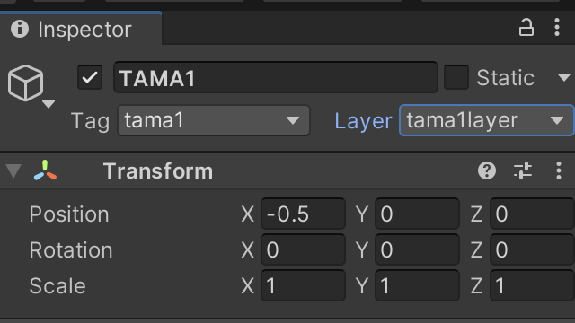
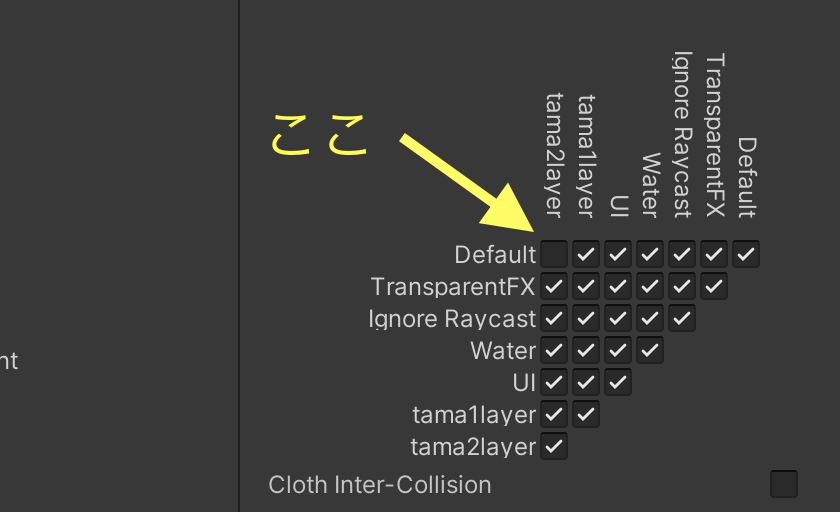

自分が敵にぶつかったり、自分が撃った弾が敵に当たったりなど、ゲームでは様々な当たり判定処理が行われています。
ここでは Unity で当たり判定処理を行う方法について学びます。
演習を行う前に準備をしましょう。
こちらのテキストに従ってブロジェクトの新規作成をする(プロジェクト名は適当で結構です)
アセットフォルダの Scenes フォルダの中にシーンを新規作成し、シーン名を「Atari Scene」にする。背景色は任意で構わない
新規作成したシーンへ移動する
ヒエラルキー右クリック → 3D Object → Sphere で球を新規作成し、名前を「JIBUN」、Position を (0,-3,0)にする
ヒエラルキー右クリック → 3D Object → Sphere で球を新規作成し、名前を「TAMA1」、Position を (-0.5,0,0)にする
TAMA1 に Rigidbody をアタッチする。
ヒエラルキー右クリック → 3D Object → Sphere で球を新規作成し、名前を「TAMA2」、Position を (0.5,3,0)にする
TAMA2 に Rigidbody をアタッチする。
アセットフォルダの空いている部分を右クリックしてメニューを表示し、Create → Folder でフォルダを新規作成し、「Scripts」という名前に変更する
Scripts フォルダの中に入り、空いている部分を右クリックしてメニューを表示し、Create → Visual Scripting → Script Graph を選ぶ
アセットフォルダ内に「New Script Graph」というアセットが出来るので「Atari Script」に名前を変更する
JIBUN に Script Machine コンポーネントをアタッチする
Script Machine の Graph の None と書いてあるセルに Atari Script をドロップする
Unity では On Collision Enter というイベントを使って当たり判定処理を行うことが出来ます。
では試しに図1のスクリプトを実行してみましょう。
すると JIBUN に TAMA1、TAMA2 がぶつかると On Collision Enter イベントが呼び出されて「ITAI」とデバッグ表示されます。
図1. 当たり判定処理

敵の弾が自分に当たった時など、自分や敵とぶつかったゲームオブジェクトを消したい時があります。
Unity では On Collision Enter イベントの Collider 出力を Game Object Get Game Object ユニットに接続するとぶつかったゲームオブジェクトを取得できます。
それを Game Object Destroy ユニットを接続することでぶつかったゲームオブジェクトを消せます。
試しに図 2 を実行してください。
TAMA1、TAMA2 がぶつかった時にそれらが消えると思います。
図2. 当たったゲームオブジェクトを消す

何かに自分を当たったら自分を消したい場合は Game Object Destroy ユニットの入力に This ユニットを繋ぎます。
This ユニットの出力は自分自身を表しますので、自分が消えまする
では試しに図 3 を実行してください。
TAMA1 がぶつかったら JIBUN が消えます。
図3. 何かに当たったら自分を消す
ゲームオブジェクトにタグを付けて当たった時の処理を分ける事もできます。
まず例として、以下の手順で TAMA1 に tama1、TAMA2 に tama2 というタグを付けてみましょう。
ヒエラルキーにある TAMA1 または TAMA2 をクリックしてインスペクタを表示する
Tag と書いてある隣の「Untagged」をクリックし、一番下にある Add Tag... を選択する。
Tags ＆ Layers 画面の Tags の + を押し、New Tag Name に「tama1」と入れて Save ボタンを押す(図4)。するとリストに tama1 が追加される。
図4. 新規タグの作成

もう一度 Tags の + を押し、New Tag Name に「tama2」と入れて Save ボタンを押す。するとリストに tama2 が追加される。
ヒエラルキーにある TAMA1 をクリックしてインスペクタを表示し、Tag と書いてある隣の「Untagged」をクリックし、tama1 を選択する(図5)
図5. TAMA1 に tama1 タグを付ける
同様にヒエラルキーにある TAMA2 をクリックしてインスペクタを表示し、Tag と書いてある隣の「Untagged」をクリックし、tama2 を選択する
これで準備が出来たので、On Collision Enter イベントの中で TAMA1 と TAMA2 別に処理を分けてみましょう。
On Collision Enter イベントの Collider 出力を Component Get Tag ユニットに接続すると当たったオブジェクトのタグを取得できます。
後はタグに従って普通に分岐処理するだけです。
試しに図 6 を実行してください。
TAMA1 がぶつかったら TAMA1 が、TAMA2 がぶつかったら JIBUN が消えると思います。
図6. タグ別に当たった時の処理を分ける
ゲームオブジェクトにレイヤーを設定し、特定のレイヤー間で当たり判定を無効にすることが出来ます。
まず例として、以下の手順で TAMA1 に tama1layer、TAMA2 に tama2layer というレイヤーを設定してみましょう。
ヒエラルキーにある TAMA1 または TAMA2 をクリックしてインスペクタを表示する
Layer と書いてある隣の「Default」をクリックし、一番下にある Add Layer... を選択する。
Tags ＆ Layers 画面の User Layer〜 のうち空いているセル(以下の例では User Layer 6と7) に「tama1layer」、「tama2layer」を入れる(図7)。するとリストに tama1layer と tama2 layer が追加される。
図7. 新規レイヤーの作成
ヒエラルキーにある TAMA1 をクリックしてインスペクタを表示し、Layer と書いてある隣の「Default」をクリックし、tama1layer を選択する(図8)
図8. TAMA1 のレイヤーを tama1layer を設定する
同様にヒエラルキーにある TAMA2 をクリックしてインスペクタを表示し、Layer と書いてある隣の「Default」をクリックし、tama2layer を選択する。
これで準備が出来たので、JIBUN と TAMA1 はぶつかるけど、TAMA2 とはぶつからないようにしてみましょう。
まず
Edit メニュー → Project Settings → Physics → Layer Collision Matrix
で当たり判定の設定画面を表示してください。
そこのチェックがついているレイヤー間で当たり判定が生じますので、Default (JIBUNのレイヤー) と Tama2layer のチェックを外します
あとは実行すると TAMA2 とはぶつからなくなっているはずです。
図9. JIBUN (Default) と TAMA2 (tama2layer) の当たり判定を無効にする
